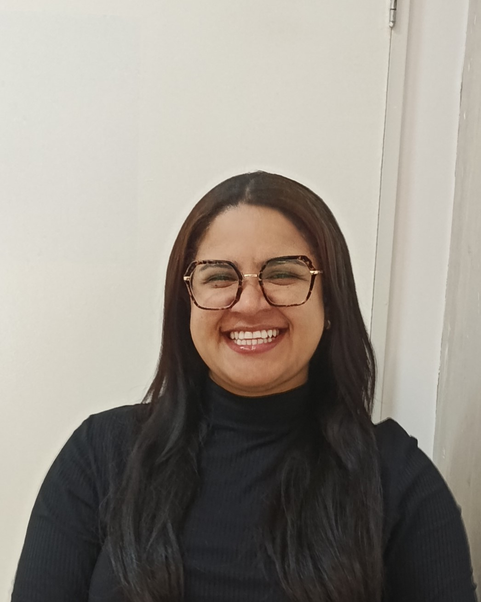

Carla Zuliani Sandrin Camargo
Da Periferia à Liderança Pedagógica: A Trajetória de Transformação e Persistência de Carla
A história de Carla, atual coordenadora pedagógica do SESI Vinhedo, é um testemunho profundo de como a educação, a determinação e as escolhas certas podem redefinir o destino de uma vida. Aos 38 anos, Mestre em Educação na linha de Educação Matemática e graduada em Pedagogia, ela carrega em sua bagagem profissional e acadêmica uma trajetória construída com intenso esforço pessoal e superação de barreiras sociais.
Criada em um bairro periférico e humilde de Itatiba, Carla cresceu em uma casa simples de dois cômodos compartilhada por cinco pessoas. Seus pais, embora sem formação acadêmica, foram seus primeiros incentivadores. Em especial, sua mãe tornou-se sua maior inspiração ao repetir um conselho que marcaria a vida da filha para sempre: a importância de estudar para aprender a "discernir as coisas" e saber escolher o que é bom e o que constrói o futuro.
A realidade escolar de sua infância e adolescência era complexa e desafiadora. Estudando em escolas públicas periféricas, marcadas pela vulnerabilidade social, violência e pela desmotivação geral, Carla percebeu muito cedo que precisava tomar as rédeas de seu próprio aprendizado. No quinto ano do Ensino Fundamental, inspirou-se na paciência e dedicação de sua professora de Matemática, Solange, e tomou uma decisão ao lado de seu grupo de amigos: unirem-se em grupos de estudos no contra turno para mudarem de vida através da educação. O compromisso deu frutos extraordinários, levando aqueles jovens da periferia a se tornarem engenheiros, economistas, prefeitos e líderes em suas áreas.
Ao concluir o Ensino Básico, enfrentar o ensino superior trouxe novos desafios. Sem condições financeiras para arcar com a faculdade, trabalhando em rotinas pesadas para pagar os estudos e lidando com a falta de uma base acadêmica sólida, Carla ingressou no curso de Pedagogia. Ela descreve com humildade que foi realmente "letrada na faculdade", aprendendo do zero a utilizar computadores, formatar textos e fazer apresentações acadêmicas.
Foi durante a graduação que sua paixão pela Educação Matemática se consolidou, ao conhecer a professora Dayse (Dayir), que se tornou sua mentora e grande referência. Reconhecendo o potencial e a dedicação de Carla, a professora a convidou para projetos de iniciação científica, monitoria e grupos de pesquisa. Para pagar a faculdade, Carla conciliava o trabalho em escolas infantis com a função de transcritora e auxiliar de textos acadêmicos, absorvendo todo o conhecimento de debates de mestrado e doutorado ao seu redor.
Sua entrada na rede SESI começou como estagiária em Itatiba. Mesmo na condição de estagiária, Carla buscou ir além, aplicando pesquisas de campo, inovando nas metodologias de ensino de Matemática para os anos iniciais e deixando uma marca de excelência. Após se formar com nota máxima em seu TCC e prestar concursos concorridos com milhares de candidatos, conquistou sua vaga como professora efetiva do SESI e ingressou no mestrado com bolsa de estudos.
A transição para a docência efetiva exigiu coragem para enfrentar preconceitos e desconfianças — por ser uma profissional jovem, de origem humilde e mulher negra, além de propor metodologias ativas e investigativas em vez do ensino tradicional mecânico. Ao demonstrar embasamento teórico sólido em reuniões com famílias e conquistar resultados expressivos no aprendizado dos alunos, Carla transformou resistência em admiração comunitária.
"A minha pesquisa foi a primeira do Brasil e hoje, quando alguém vai fazer pesquisa nessa área, todo mundo me usa como referência, que é sobre o ensino da álgebra nos anos iniciais. É possível trabalhar álgebra com crianças pequenas. Depois da minha pesquisa, surgiram várias outras e hoje o tema está dentro do currículo." — Carla, sobre sua contribuição pioneira para o ensino de Matemática
Seu desempenho e domínio metodológico a levaram a marcos ainda maiores dentro da instituição: foi convidada a coescrever os materiais didáticos de Matemática do 1º ao 5º ano do Ensino Fundamental e da Educação de Jovens e Adultos (EJA) comercializados pelo SESI para redes públicas, impactando milhares de professores e estudantes pelo país. Coautora de diversos livros publicados na área de Educação Matemática desde 2013, Carla construiu uma carreira sólida pautada na utilidade social do conhecimento.
Ao olhar para sua caminhada até a coordenação pedagógica no SESI Vinhedo, Carla reforça a importância de saber escolher quem nos acompanha na jornada e valorizar as oportunidades educacionais que a vida nos apresenta.
Com uma história moldada por referências femininas marcantes — desde a sabedoria de sua mãe até o apoio de professoras e gestoras ao longo da vida —, Carla deixa um conselho valioso para todos os estudantes: